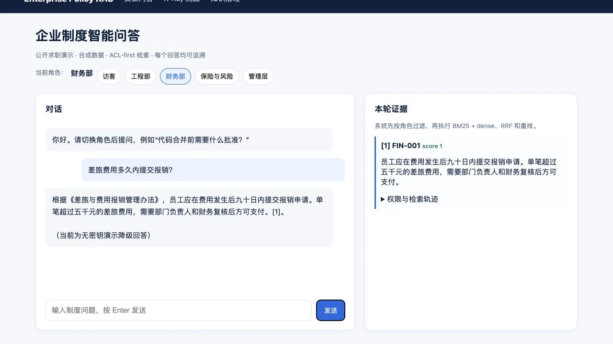

先定义可信边界
企业问答的风险不只在答错，也在未授权文本被带入检索和生成。
- 将 ACL 放在所有检索通道之前，未知路径默认拒绝，不做全库回退。
- 公开版仅使用合成制度数据；真实文档、原始 chunk、私有 gold-set 和密钥不进入仓库或截图。
02 / 公开合成数据 Demo
让企业问答只基于当前角色有权访问、且能够被逐条追溯的证据回答。

面向公开合成企业制度数据的 RAG 作品：以 ACL-first、混合检索、证据溯源和 fail-closed，把“能回答”收束为可授权、可解释、可回归验证的问答路径。
使用场景适用于企业员工按角色查询制度、流程、合同与保险风险信息的公开合成数据演示场景。
核心问题纯召回或自由生成可能让未授权内容被检索、让答案失去证据来源，且难以在回归后识别保护问题是否退化。
负责范围我负责公开作品的权限边界、混合检索路径、证据引用与拒答策略、评测门禁和可解释界面设计。
产品判断权限不是生成后的遮罩，而应当发生在召回之前；无证据、非法引用或服务异常时，系统应明确降级为受控回答，而不是补全猜测。
用户问题与角色先进入 ACL 过滤；授权范围内再执行 BM25、可选 BGE、RRF 与轻量重排，最后以引用校验决定回答或拒答。
以下界面均来自本地公开合成数据 Demo；真实语料、私有评测与密钥均不进入作品集。
企业问答的风险不只在答错，也在未授权文本被带入检索和生成。
把词法、向量、融合和重排从黑盒结果拆成可查看的证据轨迹。
证据不足时拒答，不把模型补全当作产品默认。
交付内容交付员工问答、X-Ray 检索透视、只读知识治理页、FastAPI/Docker/Render 配置与 Protected Regression Gate。
验收方式访客／财务角色对比、X-Ray 证据检查与 Protected Query Gate
下一步与边界真实部署仍需企业 IdP、受控语料存储、集中脱敏日志、独立评测环境与生产级限流。